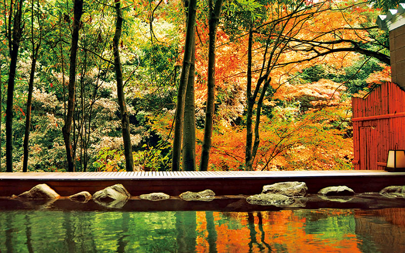

CNN— Nestled between the towering Japanese Alps and the meandering coastline of the Sea of Japan lies one of the country’s best-kept secrets: Hokuriku.
Consisting of four prefectures – Toyama, Niigata, Ishikawa and Fukui – this region on Japan’s main Honshu island was a major hub during the Edo period (1603-1867). However in the century to follow, it fell under the shadow of its neighbors – Tokyo to the east and Osaka to the southwest.
Now, thanks to a new bullet train extension that will connect the region with Tokyo starting in March 2024, it’s going to be easier than ever to experience Hokuriku’s many sights.
The Hokuriku Shinkansen line dates back to 1997. At the time, it was called the Nagano Shinkansen, built to connect the prefecture with Tokyo for the 1998 Nagano Winter Olympics.
In 2015, the line was extended and renamed Hokuriku Shinkansen to reflect its expansion into the region, with the tracks making their way through Niigata and Toyama prefectures – the later famed for its 20-meter-deep snow corridor (66 feet) – ending at Kanazawa Station in Ishikawa prefecture.
The 2024 extension, ending in Tsuruga Station in Fukui prefecture, will add 125 kilometers (78 miles) of track and offer a wealth of new travel opportunities for international visitors. The journey from Tokyo to Tsuruga Station will take three hours and eight minutes – 51 minutes faster than current rail travel times.
“The opening of the Hokuriku Shinkansen has increased interactions between cities and expanded the flow of visitors for both business and tourism across the wide area,” says a representative from West Japan Railway Company (West JR) when asked how the new Shinkansen has impacted the region in recent years.
Nowhere is this more apparent than in Ishikawa prefecture, which witnessed a dramatic impact on its tourism industry when the bullet train was extended to Kanazawa city.
The numbers tell the story – it recorded 3.3 million more tourists in 2019 than the year before the opening of the Kanazawa Shinkansen station in 2015.
“Although the number of tourists has not recovered to the pre-Covid-19 level, since the opening of Kanazawa, the spillover effects have appeared and continued in various aspects, including a significant increase in the number of tourists, far exceeding expectations,” Yumiko Omoteguchi, who works in Ishikawa prefecture’s tourism division, tells CNN Travel.
It’s hoped the new extension will bring the underexplored parts of the Hokuriku region into the international limelight.

Among the top highlights are the area’s hot spring (onsen) resort villages.
There are four located near Komatsu Station and Kaga Onsen Station in Ishikawa (Awazu, Yamanaka, Yamashiro and Katayamazu) and one, Awara Onsen, with an eponymous station in Fukui prefecture.
“Numerous hot spring resorts, ranging from reasonably priced to luxury ryokan (inns), are lined up to meet the needs of travelers, and with the extension of the Shinkansen line in March 2024, we expect many tourists to visit these areas,” says Omotegushi.
She adds that overnight guests at the five hot spring resorts were forecast be about 3 million in 2024, an increase of about 400,000 compared with 2019’s pre-Covid figures.
The four-century-old KAI Kaga is among the onsen ryokans in Ishikawa looking forward to welcoming new waves of travelers.
Formerly called Shiroganeya, this traditional Japanese inn was built in 1624 in Yamashiro, serving the likes of the feudal lord of the Kaga domain in the Edo period, and Rosanjin Kitaoji, a famed artist from the early 1900s.
The homegrown Hoshino Resorts group took over and refurbished the space in 2012.
The ryokan, featuring red wooden walls and an outdoor zen garden, proudly showcases regional craftsmanship in every corner and works with local communities to promote tourism in the area.
Each room is decorated with artisanal papercraft, dyed fabrics and Kutani-yaki (a style of lavishly painted porcelain) tea sets.
A contemporary performance inspired by the traditional mythical lion dance (shishi) happens every night.
“For KAI Kaga, (the new Shinkansen line) is an opportunity to share the charms of Kaga with customers not only in Japan but also internationally,” General Manager Aya Morishita tells CNN Travel.
Fukui prefecture’s stations on the Shinkansen line – Awara Onsen Station, Fukui Station, Echizen-Takefu Station and Tsuruga Station – are all likely to be popular destinations for travelers thanks to the bullet train’s arrival. And for good reason.
Similar to Ishikawa, Fukui prefecture has well-preserved ancient architecture, historic sites and temples. Meanwhile, new attractions are already sprouting in and around Fukui City, while existing ones are expanding.
“The extension of the Hokuriku Shinkansen line to Fukui is expected to bring us a drastic change in the flow of people and goods,” says Yasui Masaki, director of the Fukui City Omotenashi Tourism Promotion Division.
“It is a once-in-a-century opportunity to promote the very best that Fukui has to offer. We will be facing a major turning point, the start of a new era for Fukui. The number of international tourists is expected to increase much more when Expo 2025 Osaka is held a year after the Shinkansen extension.”
A 100-meter-tall (328-foot) commercial complex – holding a Courtyard by Marriott hotel, a three-story food hall celebrating Fukui’s local cuisine, offices and a residential building – has been built next to Fukui Station and will reportedly open by March 2024.
The Fukui Prefectural Dinosaur Museum, home to one of Asia’s largest dinosaur collections, has recently undergone a major expansion. It’s now home to 50 complete dino skeletons, including a rare Brachylophosaurus mummy fossil that bears bits of well-preserved skin.
For something travelers won’t experience anywhere else in Japan, Yasui says Sho-onji Temple’s techno Buddhist memorial service is a “must-see.”
“The temple’s interior is impressive in its own right, but it is only here that you can experience a new, unique style of Buddhist service utilizing techno music and projection mapping, making for an unforgettable experience,” says the tourism director.
Created in 2016 to attract younger visitors, the twice-a-year techno memorial services (usually in May and October) have become so popular the temple is planning to open an “art space” that will allow people to experience the service throughout the year, Yasui said.
In terms of local cuisine, Fukui is a major rice producer as well as a seafood port, making it a great destination for sushi lovers.
Its Echizen gani crabs – male snow crabs that stretch as long as 80 centimeters (31 inches) – are among the region’s most prized delicacies.
“Until now, foreign tourists coming to Fukui Prefecture have mainly been from East Asian countries due to its proximity to Kansai International Airport (Osaka) and Central Japan International Airport (Nagoya), and the fact that many flights to these airports are from East Asian and Southeast Asian countries,” says Nagata Tomohiro, senior group manager of the Fukui Prefectural Government International Tourism Office.
With the new Shinkansen connection, tourists landing at Haneda or Narita airports near Tokyo will more easily be able to travel directly to Fukui prefecture.
“This is expected to increase the number of tourists from Europe, North America and Australia, who mainly use Narita Airport,” says Nagata, who encourages travelers to explore outside the well-traveled urban areas of Tokyo, Osaka and Kyoto.
For sakura seekers, Asuwa River, which runs through Fukui City, is lined with a two-kilometer stretch of cherry blossom trees that flower every spring.
The city is also a good base for those who want to visit Maruoka Castle Park, one of 12 remaining castle towers in Japan, as well as Eihei-ji, one of two head Soto Zen Buddhist temples in Japan.
Meanwhile, in Nishiyama Park, between Fukui and Echizen-Takefu Stations, visitors can enjoy a sea of azalea bushes and visit a red panda zoo.
The tourism manager also recommends the rugged cliffside rock formations at Tojinbo as well as the scenic Mikata Goko (Five Lakes of Mikata) and accompanying Rainbow Line – an 11-kilometer (seven-mile) road offering views of the lakes – in Wakasa Bay Quasi-National Park near Tsuruga Station.
“Why is it called ‘rainbow’? Come to Fukui to find the answer,” Nagata teases.